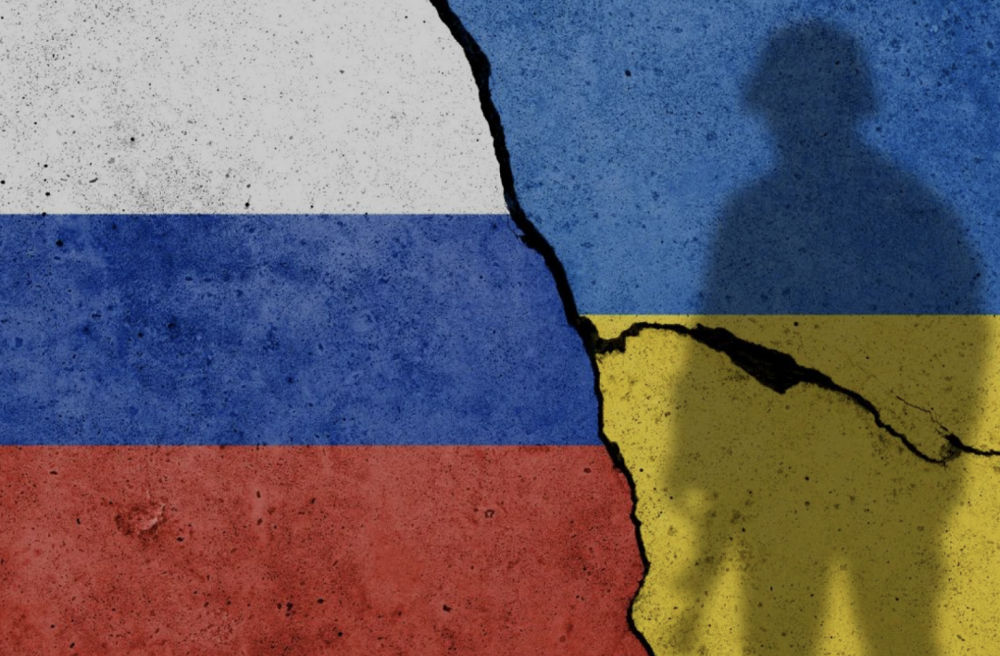

收录于合集

俄乌战争并不会改变世界，但将让现实主义重新回归
发生在乌克兰的战斗迟早会结束。没有人知道最终的决议将会是什么时候，以何种方式出台。也许俄罗斯军队会崩溃并完全撤退；也许俄罗斯领导人会换人，他的继任者们会达成一项慷慨的协议，让两国回到旧时和平的时光；也许乌克兰军队会失去继续战斗的意愿——但这些情况几乎都不可能发生。最有可能的情况是，也许战争会在一个没有结果的僵局中继续下去，直到主角们精疲力竭，然后谈判达成和平协议。然而，即使在这种情况下，也很难知道最终条款可能是什么，也很难知道它会持续多久。
无论结果如何，许多观察人士认为，这场战争将对世界政治的整体状况产生深远影响。他们将乌克兰战争视为一个分水岭:一个巨大的岔路口。如果俄罗斯输得很惨，“自由世界秩序”将重获新生，威权势力将遭受挫折。然而，如果普京勉强取得某种胜利，他们预计俄罗斯将滑向极权主义的深渊。现有的反对用武力获取领土的准则将会被削弱，而其他国家可能会被授权在地缘政治对他们有利的时候发动类似的运动。
我有不同的看法。 乌克兰战争是一个重大事件，但这并不是因为其结果将对全球力量平衡或各国构建（和时而遵守）的规范环境产生巨大的独立影响。 相反，它之所以重要，是因为它标志着短暂的“单极时刻”(1993-2020年)的结束，当时美国是世界上唯一真正的超级大国，还因为它预示着世界政治格局的回归——在美国不受挑战的短暂时代，这种格局曾被暂时压制。 然而，早在俄罗斯入侵乌克兰之前，那个时代就已近在眼前，而这场战争本身更像是一个标点符号。
我不太倾向于将乌克兰战争视为一个变革的时刻，因为这些陈词滥调我在近几十年来听过太多遍了。 当柏林墙倒塌、苏联解体、华约解体时，我们被告知“一切都变了”。一个新的世界秩序就在眼前，强权政治不复存在，人类被认为已经达到了“历史的终结”，自由资本主义民主(最好是美国版本)现在是唯一的未来 。
但是，2001年9月11日，“一切都变了”，我们突然陷入了一场“全球反恐战争”，一些过度紧张的分析人士试图将其重新包装为“第四次世界大战”。2008年金融市场崩溃，华尔街的“宇宙主人”们被揭露出易受骗、易犯错误和腐败，“一切都变了”。然后，当唐纳德·特朗普成为总统，开始践踏美国政治剧本中的所有规范时，“一切都改变了”。
所以，请原谅我并不认为乌克兰战争是人类历史上的一个决定性转折点。 尽管已经发生了所有的破坏和痛苦，但要达到朝鲜战争、越南战争、伊朗和伊拉克之间的战争、中非战争以及美国在伊拉克和阿富汗的战役所造成的破坏程度，还有很长的路要走。
当然，战争仍有可能发生——尤其是如果使用大规模杀伤性武器的话——但可能性不大(我热切希望这一预测被证明是正确的)。 更重要的是，当前这场战争的不同之处在于， 这是自上世纪90年代初以来第一次——但几乎不是历史上第一次——在一场主要战争中出现对立的大国。 但这是对常见大国冲突(以及代理人战争)模式的回归，并不是什么新奇或独特的事情。
如上所述，这场战争更准确地被视为标志着冷战结束后短暂的准和平正式结束。 战争并没有在那个时期消失——美国参与了一些战争，并发动了一些战争——但这个时期的冲突要么是内战，要么是小国家之间的战争，要么是大国和小国家之间的严重不协调，或者是三者的结合。
由于俄罗斯等国家彼时都不够强大，无法公开抵制美国，直接的大国竞争也被抑制了。 达特茅斯学院(Dartmouth College)政治学家威廉·沃尔弗斯(William Wohlforth)关于“单极世界的稳定性”的文章在一定程度上是正确的： 很少有国家愿意面对美国的“集中敌意”，或采取可能把美国带入敌对状态的行动。沃尔弗斯的错误之处在于他的预测：单极可能比冷战的双极持续更久。
然而，这种误判并不完全是他的错，因为他不可能预见到加速单极时代结束的多次失误。如果美国的政策制定者能够更聪明、更少受到意识形态的驱使、更现实(无论从哪方面来说)，美国的主导地位和单极稳定将会持续更长时间。
美国官员没有保留美国的实力，没有在任何可能的地方解决冲突，也没有努力确保没有任何竞争对手出现，相反，他们做了完全相反的事情。 他们帮助中国更快地崛起，并在大中东地区代价高昂、误入歧途的“十字军东征”中浪费了数万亿美元。他们没有通过“和平伙伴关系”(Partnership for Peace)等机制逐步扩大自由制度， 而是在没有考虑俄罗斯关切的情况下扩大了北约，并轻率地认为莫斯科将不采取任何措施阻止它。
他们对全球贸易和投资采取了新自由主义的方式，而不是采取更加慎重的方式来应对全球化，并确保全球化带来的利益在美国国内得到广泛分享，他们没有采取足够的措施使美国处于危险境地的劳动力部门免受全球化的影响。 美国的政客们——这里我主要指的是共和党——非但没有努力使美国的民主成为其他社会可能想要效仿的模式，反而一再践踏了真正民主赖以生存的基本原则和规范。 这种单极时刻不会永远持续下去，但由于一再犯下的疏忽和过失(没有人为此负责)，它提前结束了。

那么这将给我们带来什么呢?
首先，正如现在每个人都意识到的那样，在这个世界上，硬实力仍然很重要。 如果俄罗斯成功吞并顿涅茨克州和卢甘斯克州，并建立起通往克里米亚的陆桥，那将是因为俄罗斯军队能够完成这一使命，尽管他们此前曾犯下误判和失误。
如果乌克兰保留了全部或大部分以前的领土，那将是因为其公民使用了硬实力(在大量外部帮助下)来阻止这个更大的邻国。如果大肆宣传的“反对征服的准则”得到强化，那并不是因为普京突然想起应该遵守这些准则，而是因为乌克兰民族主义和有效武器的结合让莫斯科难以克服。
第二，再次警醒世人！经济相互依赖并非没有风险和权衡。市场固然重要，但政治更重要。 通过贸易、投资、复杂供应链和天然气管道连接世界带来了明显而巨大的好处，但紧密的经济联系并不是阻止冲突的坚固屏障，如果这些联系破裂，无论是因为危险的病毒还是突然的地缘政治裂痕，依赖他人可能会造成真正的痛苦。
展望未来，大多数国家和大多数公司都将为了冗余和弹性而牺牲一定的经济效率。经济增长将低于原本可能的水平，但破坏性冲击将更少发生，政府和企业将不那么容易受到经济压力的影响。 当被迫在安全和利益之间做出选择时，大多数国家都会选择前者。
第三，即使俄罗斯在顿巴斯取得了一些有限的进展，这场战争也会加速俄罗斯的相对衰落。 普京可能会阻止乌克兰加入北约，但这一成就的长期后果将使俄罗斯整体处境更糟。 除非他竖起新的铁幕，否则才华横溢的年轻俄罗斯人将继续离开。 随着越来越多的国家摆脱对俄罗斯石油、天然气和煤炭的依赖，国家收入将会下降。乌克兰将继续在经济上向欧洲靠拢，这个过程在战争开始前就已经开始了。
如果普京真的在乌克兰取得了“胜利”——这一点也不确定——那将是得不偿失的。 俄罗斯的统治可能更安全，但后果不那么严重。 未来的世界将更接近于真正的两极化，而不是不平衡的多极化，俄罗斯将扮演中国的小伙伴角色(其经济活力和长期战略价值可能正在减弱)。 而且随着俄罗斯经济步履蹒跚、人口老龄化和人口萎缩，莫斯科可能需要更多的支持。
即将出现的未来既不是以美国为中心的“自由秩序”，也不是以某个国家为中心的秩序。相反，中美两个主要大国都将领导部分命令，将价值观相似的国家纳入其中，或者别无选择，只能与其中一方结盟。 毫无疑问，华盛顿和北京都将期待一些盟友的忠诚。随着两国竞相确定哪一种技术标准将占主导地位，以及数字世界逐渐被防火墙、安全措施、不兼容的隐私标准和其他限制所分割，预计数字领域将出现更大的分歧和争论。
但正如全球对乌克兰的反应所示，许多国家——尤其是南半球的国家——将抵制选择一方的压力，并将努力远离与他们没有直接关系的争吵。他们中的一些人会试图通过挑拨美国和中国的关系来获取更大的利益。 除此之外，这种情况提醒人们， 试图将美国的外交政策建立在严格二分法之上，只会导致失败。 与过去一样，成功需要在可能的情况下与志同道合的伙伴合作，在必要时与与美国价值观不同的国家合作。
不幸的是，大国之间的合作将更加难以实现和维持，即使它们的利益部分一致。这可能是这场肮脏但迄今为止只是局部的战争带来的最严重的后果： 它让大国有借口忽视气候变化加速这一不那么迫在眉睫但更为不祥的危险。 应对气候变化需要所有大国做出牺牲，但当它们担心全球力量平衡，不愿比竞争对手放弃更多时，它们就不太愿意做出牺牲。
我们回到了一个现实主义解释得最好的世界，一个大国争夺权力和影响力，其他国家尽其所能适应的世界。 丛林并没有像罗伯特·卡根想让我们相信的那样“重新长出来”； 丛林法则从未真正消失，甚至当美国是最大的野兽，并自欺欺人地认为它可以让所有其他动物听话的时候也一直存在。 这不是一个特别幸福的想法，但现实主义描绘的世界并不是一个特别幸福的世界。
作者： 斯蒂芬·沃尔特（Stephen M. Walt），现为哈佛大学肯尼迪政府学院教授，代表作《联盟的起源》等。
来源： 《外交政策》（ Foreign Policy ）2022年4月13日刊；尚道编译。
排版 | 柴昕彤
文章来源于尚道战略，文章观点不代表本平台观点